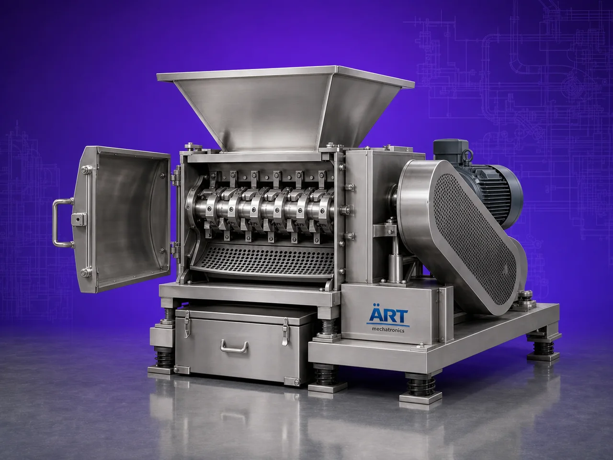

Granulator Machine (Industrial Granulating & Size Reduction System)
A Granulator Machine, also known as an Industrial Granulating Machine, Material Granulator, Size Reduction Machine, or Industrial Granulation System, is an advanced industrial processing solution designed for granulation, crushing, chopping, shredding, size reduction, particle formation, recycling, and high-speed material processing operations across plastic, food, pharmaceutical, chemical, agro, biomass, recycling, and industrial manufacturing industries.

About the Granulator Machine
Granulator systems are widely used for:
- Plastic granulation operations
- Food ingredient granulation
- Spice and herb granulation
- Chemical particle formation
- Pharmaceutical granule processing
- Biomass size reduction
- Industrial scrap recycling
- Continuous material processing operations
The machine improves:
- Particle size uniformity
- Production efficiency
- Material handling consistency
- Processing speed
- Recycling productivity
- Industrial automation efficiency
- Product quality standards
Industrial granulator machines use:
- Heavy-duty granulating blades and cutters
- Rotor and screen based granulation systems
- PLC and HMI automation controls
- Precision feeding mechanisms
- High-performance drive systems
to automatically process and granulate materials with superior consistency and high production efficiency.
Granulator machines are widely used in industries such as:
Plastic recycling industries Food processing industries Pharmaceutical industries Chemical industries Agro industries Biomass industries Packaging industries Industrial manufacturing industries
where controlled particle sizing, continuous processing, and high-speed industrial productivity are essential.
The machine is highly suitable for:
- Plastic scrap granulation
- Food ingredient size reduction
- Spice and herbal granulation
- Chemical particle processing
- Pharmaceutical granule formation
- Industrial recycling and processing systems
ART Mechatronics offers high-performance granulator machines, engineered for continuous industrial operation, precision granulation performance, rugged construction, and reliable long-term industrial productivity.
Working Principle of Granulator Machine
- 1. Material Feeding & Loading Raw materials are automatically or manually fed into granulation chamber for processing operation.
- 2. Material Cutting & Granulation Process Machine automatically cuts, crushes, chops, or shreds materials using high-speed rotating blades and precision granulation systems.
Precision synchronization ensures uniform granule formation and smooth material processing.
- 3. Granulation & Size Reduction Operation Machine handles processing of: ✔ Plastic materials ✔ Food ingredients ✔ Spices and herbs ✔ Chemical products ✔ Pharmaceutical materials ✔ Biomass products ✔ Agro materials ✔ Industrial scrap materials
accurately and continuously.
- 4. Screening & Particle Formation Process Machine performs: Granulation Crushing Shredding Particle formation Size reduction Screening and classification
for efficient industrial material processing operations.
- 5. Intelligent Automation & Safety Integration Optional systems include: Dust extraction systems Automatic feeding systems Cooling systems Safety guarding systems Noise reduction systems
- 6. Finished Granule Discharge Processed granules discharged automatically for: Packaging operations Mixing systems Extrusion processes Storage silos Export shipment handling
Types of Granulator Machines
- 1. Plastic Granulator Machine Designed for: ✔ Plastic recycling and scrap processing applications
- 2. Food Granulator Machine Suitable for: ✔ Food ingredient granulation and size reduction systems
- 3. Pharmaceutical Granulator Machine Uses: ✔ Medicine and nutraceutical granule processing operations
- 4. Chemical Granulation Machine Designed for: ✔ Industrial powder and chemical processing systems
- 5. Heavy Duty Industrial Granulator Suitable for: ✔ Continuous industrial recycling and processing operations
- 6. Fully Automatic Granulation System Designed for: ✔ Complete industrial processing automation lines
Industries Using Granulator Machines
♻️ Plastic Recycling Industry Plastic scrap processing, recycling granules, and industrial waste management systems. 🍅 Food Processing Industry Food ingredients, spices, herbs, and industrial granulation systems. 💊 Pharmaceutical Industry Medicine granules, nutraceutical products, and healthcare material processing systems. ⚗️ Chemical Industry Chemical powders, industrial granules, and particle formation operations. 🌾 Agro & Biomass Industry Biomass materials, seeds, agro products, and industrial size reduction systems. 🛒 FMCG Industry Consumer product ingredients and industrial processing systems.
Features & Advantages
- High-speed automatic granulation operation
- Accurate and uniform particle size reduction systems
- Heavy-duty industrial granulating technology
- PLC and automation control systems
- Improves production efficiency and material consistency
- Reduces manual processing dependency
- Supports multiple industrial materials and applications
- Reliable long-term industrial performance
- Smooth integration with industrial production lines
Technical Highlights
Machine Type: Granulator machine Industrial granulating system Material size reduction machine Material Compatibility: Plastic materials Food ingredients Spices and herbs Chemical powders Pharmaceutical products Biomass materials Industrial scrap materials Integration: Granulating blade systems Rotor and screen systems Automatic feeding systems Dust extraction systems Features: PLC control system Touchscreen HMI Heavy-duty steel construction Cooling systems Noise reduction systems Applications: Granulation Size reduction Industrial recycling Particle formation Food processing Chemical processing Automation: Semi-automatic Fully automatic industrial systems
Turnkey Granulation Solutions
ART Mechatronics offers: Complete industrial granulation systems Automatic material size reduction solutions Industrial recycling automation systems Dust handling integration systems Installation & commissioning After-sales service & AMC
Why Choose Art Mechatronics
Expertise in industrial processing and automation systems Customized granulation solutions for multiple industries High-performance and rugged granulating technology Advanced PLC and automation systems Proven industrial processing performance across sectors
Applications
Plastic Recycling Plants Food Processing Facilities Pharmaceutical Manufacturing Units Chemical Processing Industries Agro Product Processing Plants Industrial Manufacturing Industries
Related Mixing & Blending machines
Get pricing & specs for the Granulator Machine
Share the product, target capacity, current process and plant location. These details help our engineers discuss the right machine or line configuration.
One partner, from design to start-up
ART Mechatronics designs, manufactures, installs and commissions your Granulator Machine solution with regional presence in India, UAE and Thailand.